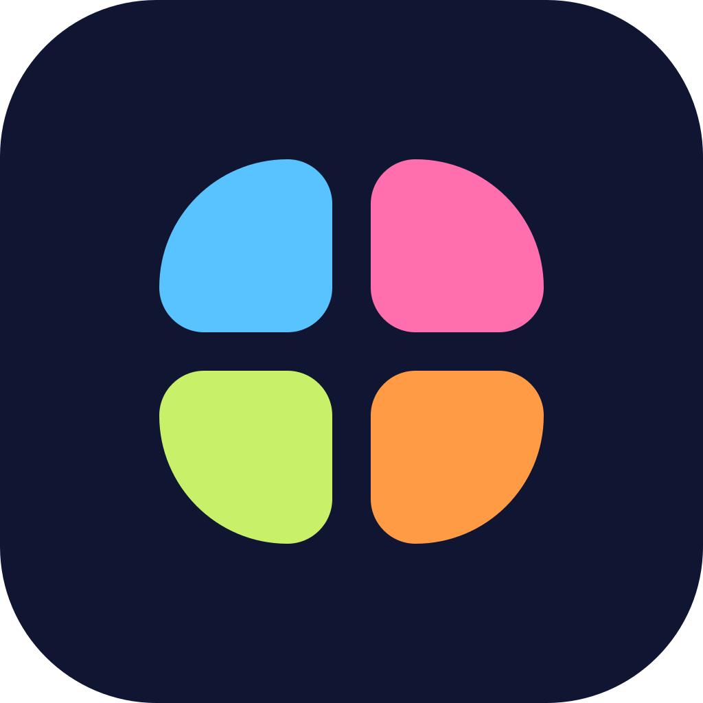

The Quad logo
A quad is the courtyard at the heart of a campus, where everyone crosses paths. The mark is four soft tiles, one each for the school, teachers, parents and students, set close together around a shared centre. The last tile has a tail, which turns the square into a Q.
How the mark is built
Four squares, 21 units each with 7-unit rounded corners, on a 64-unit grid with a 4-unit gap.
Wordmark
Custom lowercase letters drawn with an even 9-unit stroke in Quad Indigo. The q, a and d share one bowl, so the word looks as calm and even as the four tiles. The letters are drawn as shapes, so they look the same everywhere with no font installed.
Colour
The same tokens as the admin and parent apps.
#1F2559#E5534B#8B7CF6#FAF8F5#1C1B2EApp icon
The light version of the mark on Quad Indigo, for the parent app, browser tabs and the home-screen shortcut for the staff portal. The tiles stay clear down to 16 px.

Using the logo
Files
All in design/brand/ as SVG, so they scale to any size.